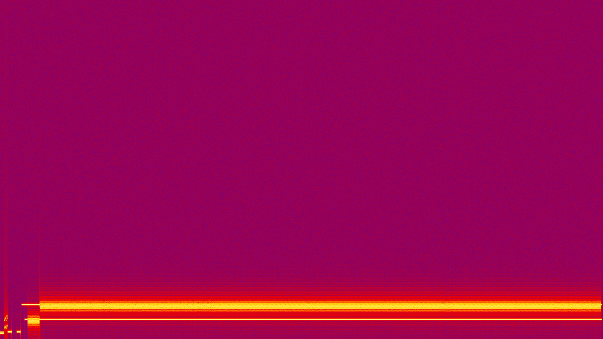
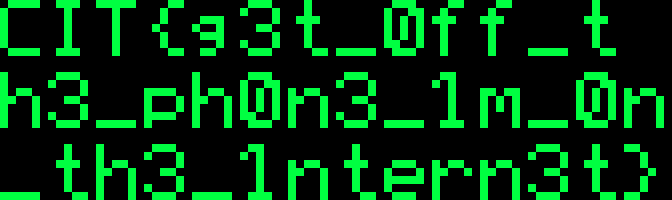

Wiretap
题目信息
- 类型：Forensics
- 题目状态：已解出
- 附件：
beep_beep_boop.wav - 核心思路：先从音频里识别出电话拨号音、回铃音和 Bell 103 调制解调器信号，再把 300 baud 的 FSK 数据解成 HTTP 响应，最后从网页里的三段 SVG 像素图读出 flag
入口与现象
附件只有一个 wav：
beep_beep_boop.wav
mono / 44100 Hz / 16-bit PCM / 237.79 s
先看频谱，能明显看到这不是普通录音，而是一段非常“规整”的电话音频：

前几秒能分出三段很典型的电话系统音：
350 Hz + 440 Hz，这是北美电话拨号音。- 中间夹着一串 DTMF 按键音。
- 后面变成
440 Hz + 480 Hz的回铃音，节奏也是标准的“响 2 秒，停 4 秒”。
这一步已经把方向缩得很小了：题目不是单纯的音频隐写，而是在模拟一通拨号上网的电话连接。
分析过程
1. 识别 Bell 103 调制解调器
回铃音之后，主频变成了两组很像电话调制解调器的 FSK 频率：
1070 / 1270 Hz2025 / 2225 Hz
这正好对应 Bell 103 的两路信道。Bell 103 是早期 300 baud 全双工 modem，常见频率组合就是：
- Originate：
1070 / 1270 Hz - Answer：
2025 / 2225 Hz
音频采样率是 44100 Hz，而 44100 / 300 = 147，刚好每个符号正好是 147 个采样点，所以直接按 300 baud 做非相干 FSK 判决就可以。
我只先解高频那一路 2025 / 2225 Hz，按每 147 个采样比较两个频点能量，再按 UART 8N1 组帧，立刻能还原出一段很像网页返回包的数据：
HTTP/1.0 200 OK
Server: Apache/1.3.6 (Unix)
Content-Type: text/html
Content-Length: 6519
Connection: close
也就是说，这段 wav 里藏着一整个拨号上网拿网页的过程。
2. 从响应里提取网页正文
把解出的 HTTP body 单独拿出来之后，可以看到是一个非常 90 年代风格的网页，标题是：
<title>Dave's Corner of the 'Net!</title>
正文里最关键的一段是：
Anyway while I was flippin thru the owner's manual ... there was this dorky little
pixel-art graphic printed at the bottom ... It was split across 3 lil scanlines.
下面还真的嵌了 3 段 SVG 像素图。到这里题目就很明确了：前面的 modem 解码只是为了把网页内容捞出来，真正的 flag 在这三段像素图里。
3. 还原 SVG 像素图
把网页里的三个 SVG 逐个解析成像素矩阵，再上下拼起来，图案如下：

这三行分别是：
CIT{g3t_off_t
h3_ph0n3_im_0n
_th3_intern3t}
直接拼起来就是最终 flag。
关键脚本 / 命令
下面这段脚本就是我实际用来还原 Bell 103 高频信道的核心逻辑：每 147 个采样做一次判决，比较 2025 Hz 和 2225 Hz 能量，再按 8N1 取字节。
import wave, numpy as np
with wave.open("beep_beep_boop.wav", "rb") as w:
fr = w.getframerate()
data = np.frombuffer(w.readframes(w.getnframes()), dtype="<i2").astype(np.float32)
start, end = 8.5, 237.2
x = data[int(start * fr):int(end * fr)]
spb = 147 # 44100 / 300
offset = 145
def tone_power(seg, fq):
t = np.arange(len(seg))
ang = 2 * np.pi * fq * t / fr
c = np.dot(seg, np.cos(ang))
s = np.dot(seg, np.sin(ang))
return c * c + s * s
bits = []
for i in range(offset, len(x) - spb + 1, spb):
seg = x[i:i + spb]
bits.append(1 if tone_power(seg, 2225) > tone_power(seg, 2025) else 0)
out = []
i = 0
while i + 10 <= len(bits):
if bits[i] != 0:
i += 1
continue
datab = bits[i + 1:i + 9]
if bits[i + 9] != 1:
i += 1
continue
out.append(sum(b << k for k, b in enumerate(datab)))
i += 10
print(bytes(out)[:200].decode("latin1", "replace"))
运行后就能看到 HTTP/1.0 200 OK 那段响应头。
Flag
CIT{g3t_off_th3_ph0n3_im_0n_th3_intern3t}
总结
这题最关键的不是“听”出什么，而是先从电话音的频率特征把协议识别出来。前半段的拨号音、DTMF 和回铃音负责告诉你“这是电话网”，后半段的 1070/1270/2025/2225 则把范围进一步锁到 Bell 103。把 modem 数据解出来之后，拿到的是一个网页响应，而网页里那三段 SVG 像素图才是最终藏 flag 的位置。